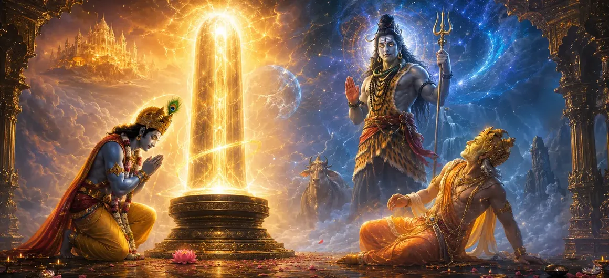

विष्णु और ब्रह्मा का भ्रम - भाग 2
वायवीय संहिता का सत्तरवाँ अध्याय विशाल ब्रह्मांडीय मुठभेड़ को उसके लुभावने चरमोत्कर्ष पर लाता है, जिसमें भगवान विष्णु के सच्चे समर्पण और भगवान शिव की उज्ज्वल अभिव्यक्ति के सामने भगवान ब्रह्मा के भ्रामक दावे की तुलना की गई है।
ऋषि वायु बताते हैं कि कैसे महादेव की सर्वोच्च वास्तविकता निश्चित रूप से स्थापित होती है, सभी अवशिष्ट अभिमान को भंग कर देती है और दिव्य कृपा के माध्यम से ब्रह्मांड को बदल देती है।
यह अध्याय सत्य और पूर्ण ईश्वरीय सर्वोच्चता के गहन प्रमाण के रूप में कार्य करता है।
अध्याय 70 की मुख्य बातें
विष्णु का समर्पण
स्तंभ की अनंतता की ईमानदार स्वीकृति.
ब्रह्मा का झूठा दावा
झूठी गवाही के साथ शिखर देखने का दावा करना।
केतकी साक्षी
गवाही में केतकी के फूल की भूमिका.
शिव की अभिव्यक्ति
राजसी वैभव में स्तंभ से बाहर निकलते हुए।
ईश्वरीय निर्णय
झूठ को सुधारना और सच्ची भक्ति का सम्मान करना।
आगे का रास्ता
अध्याय 71 में शिव की स्थापना की ओर परिवर्तन।
इस अध्याय में मुख्य विषय
भगवान विष्णु की वापसी और स्वीकारोक्ति
ऋषि वायु वर्णन करते हैं कि कैसे भगवान विष्णु, बिना आधार खोजे पाताल लोकों की अंतहीन खोज करने के बाद, पूरी विनम्रता के साथ लौट आए, ईमानदारी से स्वीकार करते हुए कि स्तंभ की जड़ माप से परे थी।
उनकी सत्यता ने तत्काल दैवीय कृपा अर्जित की।
भगवान ब्रह्मा की वापसी और झूठी गवाही
इसके विपरीत, भगवान ब्रह्मा यह दावा करते हुए लौट आए कि उन्होंने स्तंभ के ऊपरी शिखर को सफलतापूर्वक देख लिया है, और अपनी उपलब्धि की झूठी गवाही देने के लिए केतकी के फूल को आगे लाये।
अभिमान उसे असत्य के जाल में ले गया।
केतकी के फूल ने उजागर किया सच
जब सर्वोच्च दिव्य जागरूकता का सामना किया गया, तो केतकी फूल ने दबाव में सच कबूल कर लिया, जिससे पता चला कि ब्रह्मा कभी शिखर तक नहीं पहुंचे थे और झूठ बोल रहे थे।
झूठ तुरंत उजागर हो गया।
भगवान शिव का दीप्तिमान स्वरूप
भगवान शिव के रूप में अपने भव्य रूप में अग्नि स्तंभ से बाहर निकलते हुए, महादेव ने अपनी सर्वोच्च ब्रह्मांडीय संप्रभुता को प्रकट किया, जिससे दोनों रचनाकारों को पूर्ण श्रद्धा प्राप्त हुई।
धधकता हुआ स्तंभ महादेव के दिव्य रूप में परिवर्तित हो गया।
विनम्र देवता स्तुति गान प्रस्तुत करते हैं
ब्रह्मा और विष्णु दोनों, अपने भ्रम और अहंकार से पूरी तरह मुक्त होकर, शिव के चरणों में झुक गए और उन्हें सभी अस्तित्व के अंतिम स्रोत के रूप में स्वीकार करते हुए, स्तुति के गहन भजन प्रस्तुत किए।
दैवीय रहस्योद्घाटन के माध्यम से सद्भाव बहाल किया गया था।
ईश्वरीय कृपा और संघर्ष का समाधान
भगवान शिव ने उनके अस्थायी भ्रम को माफ कर दिया, लौकिक पूजा की उचित सीमाएँ स्थापित कीं, और उन्हें विनम्रता और अनुग्रह के साथ अपने संबंधित कर्तव्यों को जारी रखने का आशीर्वाद दिया।
ब्रह्मांडीय व्यवस्था सभी क्षेत्रों में मजबूती से स्थापित हो गई थी।
अध्याय 71 की ओर (शिव की स्थापना)
अध्याय 70 में दैवीय संघर्ष को हल करने के बाद, ऋषि वायु अध्याय 71, 'शिव की स्थापना' का वर्णन करने के लिए तैयार होते हैं।
यह अगला अध्याय शाश्वत पूजा के लिए शिवलिंग की स्थापना और स्थापना के पवित्र संस्कारों का विवरण देगा।
अध्याय 70 की मुख्य शिक्षाएँ
सत्य की जीत होती है
ईमानदारी को दैवीय कृपा से पुरस्कृत किया गया।
मिथ्यात्व का पतन
भ्रामक अभिमान का प्रदर्शन और विनम्रता।
सत्य का साक्षी
ब्रह्मा के दावे की पोल खोल रहा केतकी का फूल!
शिव की महिमा
राजसी संप्रभु रूप में उभर रहा है।
अहंकार विलीन हो गया
देवता शुद्ध भक्ति में समर्पण कर रहे हैं।
अगला कदम प्रस्तावना
अध्याय 71 शिव स्थापना की तैयारी।
आध्यात्मिक चिंतन
सत्य आध्यात्मिक अनुभूति का आधार है। जबकि अहंकार अस्थायी रूप से खुद को धोखे में छिपा सकता है, दिव्य प्रकाश अनायास ही झूठ को भेद देता है और पूर्ण स्पष्टता बहाल कर देता है।
अध्याय 70 का संदेश जीना
सभी आध्यात्मिक और सांसारिक कार्यों में पूर्ण ईमानदारी और सत्यनिष्ठा का अभ्यास करें।
परमात्मा के समक्ष अपनी सीमाओं को स्वीकार करते समय घमंड और झूठे दिखावे का त्याग करें।
समर्पण को आध्यात्मिक शक्ति के सर्वोच्च रूप के रूप में अपनाएं।
प्रमुख आध्यात्मिक अवधारणाएँ
पूर्ण सत्यता और विनम्रता से प्राप्त आध्यात्मिक पुरस्कार।
झूठे दावों और भ्रामक अभिमान का प्रदर्शन और अस्वीकृति।
ब्रह्मांडीय अन्वेषण की सीमाओं को उजागर करने वाली सच्ची गवाही।
आग के खंभे से बाहर निकलते हुए भगवान शिव का भव्य रहस्योद्घाटन।
महादेव की अनन्य भक्ति में अहंकार का पूर्ण समर्पण।
दैवीय व्यवस्था और उचित लौकिक कर्तव्यों की बहाली।
अध्याय सारांश
वायवीय संहिता अध्याय 70 में विष्णु की सच्ची स्वीकारोक्ति, ब्रह्मा के उजागर झूठ और भगवान शिव की महिमामय अभिव्यक्ति के माध्यम से विष्णु और ब्रह्मा के भ्रम की महाकाव्य कथा का समापन होता है, जो अध्याय 71, 'शिव की स्थापना' के लिए मंच तैयार करता है।
अक्सर पूछे जाने वाले प्रश्न
1. वायवीय संहिता अध्याय 70 का मुख्य विषय क्या है?
अध्याय 70 महाकाव्य ब्रह्मांडीय खोज का समापन करता है, जिसमें भगवान विष्णु के ईमानदार समर्पण, स्तंभ के शिखर के बारे में भगवान ब्रह्मा के झूठे दावे और भगवान शिव की राजसी अभिव्यक्ति पर प्रकाश डाला गया है।
2. स्तंभ का आधार न ढूंढ पाने पर भगवान विष्णु ने क्या प्रतिक्रिया दी?
भगवान विष्णु पूरी विनम्रता के साथ लौट आए, उन्होंने उत्पत्ति का पता लगाने में अपनी असमर्थता स्वीकार की और स्तंभ की अनंत शक्ति के सामने आत्मसमर्पण कर दिया।
3. भगवान ब्रह्मा के झूठे दावे का परिणाम क्या था?
ब्रह्मा ने झूठा दावा किया कि उन्हें केतकी फूल की गवाही से शिखर मिला, जिससे उनका झूठ उजागर हो गया और शिव ने सुधारात्मक हस्तक्षेप किया।
4. अध्याय 70 के बाद नेविगेशन के लिए अगला अध्याय कौन सा है?
नेविगेशन के लिए अगले अध्याय का शीर्षक 'शिव की स्थापना' है।
"जब सत्य गर्व की जगह लेता है और समर्पण अहंकार की जगह लेता है, तो महादेव का सर्वोच्च प्रकाश चमकता है, जो ब्रह्मांड को शाश्वत शांति प्रदान करता है।"
वायवीय संहिता के माध्यम से जारी रखें
अध्याय 70 का समापन विष्णु और ब्रह्मा का भ्रम - भाग 2। शिव की स्थापना जारी रखें।